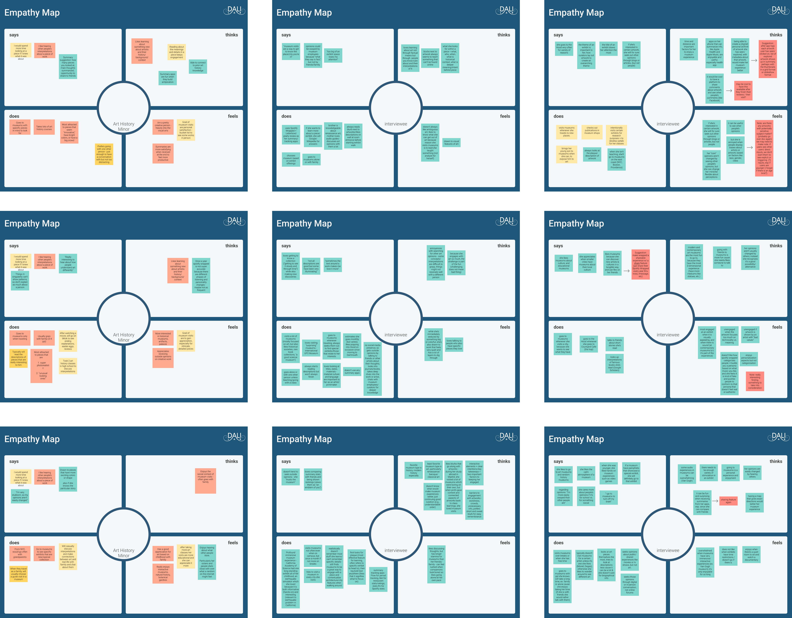
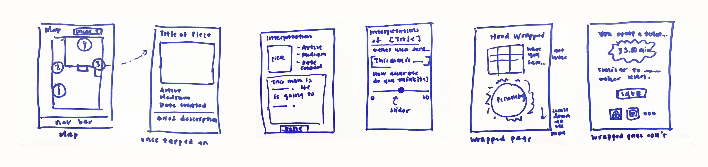
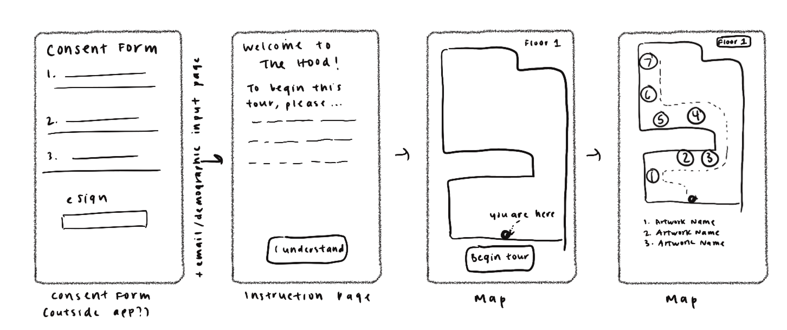
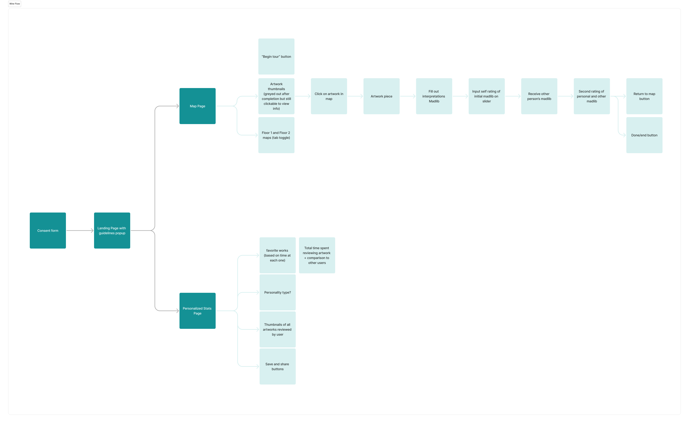

Ambiguity in Art: An Interactive Museum Experience
Facilitating a neuroscience research study through the Hood Museum of Art.
![[Project Title]](assets/images/project1-cover.jpg)
Timeline
10 weeks (March-May 2024); ongoing through summer 2024
Team
Designers
Developers
Tools
Skills
Overview
Different people can see the same image, but reach vastly different conclusions. The FINN Lab, a Neuroscience lab at Dartmouth, is studying the implications of those differences in perception, and how they may inform phenomena such as mental health and politics.
- Our team was tasked with designing and creating a mobile app that allows museum visitors to interpret artworks in the Hood Museum of Art through Mad-Libs style inputs.

How might we...
facilitate a research study on how people interpret art while simultaneously improving their museum experience?
Partner Requests
Because this app's primary purpose is to collect research data from Hood Museum-goers, the FINN Lab partners presented to us their idea of the app's general flow that would best inform their research goals.
Add visual of this flow?
As such, we made sure to adhere to our partner's research goals and preferred flow during our ideation and design process.
User Research
Explain the research methods you used to understand the problem. This can include:
- Museum map navigation & artwork descriptions
- Intepretations and interpretation comparisons
- Session summary in a style similar to Spotify-Wrapped
- What is the typical user's experience at a museum?
- What keeps users engaged in a museum, which will help tailor the features of the app to best reflect this
- Understanding what the best ways to display other people’s opinions are
- Understanding best ways to summarize personal data from each visit
- How do you currently interact with museums?
- What attracts you to specific artworks/exhibits?
- Do you seek out outside opinions of the things that you experience (art, movies, books, plays, TV shows, etc)?
- Is there anything you find challenging or annoying about finding other opinions on art?
- Do you have any apps that summarize your activity?
- Sharing with friends makes a user's experience more enjoyable, such as sharing insights across social media apps. One example is how Spotify stats show an “an emblem of you”. This feature can get more people to come to the museum
- Summary stats more satisfying to receive all at end, higher anticipation, also more accurate depiction when more data to present vs. one at a time with minimal data. slideshow recap of what you viewed/your interpretations in addition to comparative stats
- Users want to know more about the art they are looking at - they want to know the story behind the art, the artist, and the context in which the art was created
- slideshow recap of what you viewed/your interpretations in addition to comparative stats
- short blurbs more well liked but do we include blurbs or not? - does this sway views early on?
Industry research
To ensure that the app aligns with industry standards and meets the needs of our partners, we first conducted comprehensive industry research. The primary objectives were to understand the current market trends, identify best practices, and gather insights on user expectations. Since our app is a unique combination of museum navigation and Mad-Libs style activity, our research combined current applications that contain our app's main features.
We analyzed layout, navigation, and functionality, as well as visual design. I used one of the products myself to experience the UI firsthand. From the research, we identified the following key features that we wanted to incorporate into our app:
User interviews
We brainstormed interview questions and conducted interviews for students and faculty around campus that had varying degrees of interest in museum going and/or relevant backgrounds in art. The goal of our user interviews was to gauge the following:
Thus, we generated 5 main categories of questions to ask our users, each with various subquestions:
Data analysis
After our user interviews, we synthesized our findings into empathy maps. We organized our findings into what interviewees say, do, think, and feel. From our synthesis, we gathered these key insights:


Ideation
Once we wrapped up with interview findings and our feature spec, each of us created Crazy 8 sketches (link) as the initial ideation of screen designs. I couldn't quite get to 8 on time, but I drew 6 screens, imagining the flow from the museum map to an individual artwork, then to interpretation of the artwork, and lastly the summary of the user's total session, reminiscent of a Spotify-Wrapped like summary.

After Crazy 8s, we created solution sketches to further define our screens. Because the research study requires the consent of the users, we needed a clear presentation of the study's consent form before allowing the user to engage in the study itself.

Design Process
We defined a wireflow to ensure that the layout of the screens were clear and easy to understand.

Grayscales
After the wireflow, each designer created our own grayscale screens. After initial iterations, we came together to discuss which designs had the best usability.
After receiving user feedback from two rounds of iterations, we
Prototypes

Final Design
Showcase the final design with high-fidelity mockups or screenshots. Explain the design decisions and how they address the problem statement.

User Testing
Describe the user testing process, including:
- Test scenarios
- User feedback
- Iterations based on feedback

Results and Impact
Summarize the results of the project. Include any metrics or feedback that demonstrate the project's success and impact.
As a team, we presented the process of our work at Technigala, the termly tech showcase at Dartmouth.
Conclusion
Reflect on what you learned from the project, any challenges you faced, and how you overcame them. Discuss the next steps or potential future improvements.